Touchline
Coach Guide
Step by step, for Tim and Deano.
Match day and training, the two jobs we are relied on for.
Wigan Junior Latics U15 Blues
Version 1, October 2026. Screenshots use made up demo players. Coaches only: do not share this guide with parents or players.
How to use this guide
Open Touchline on your phone, keep this guide beside you, and follow the numbers. Every red number on a screenshot matches a step next to it.
Tim
Builds the block, publishes the week, picks the side, runs the live match, writes the review.
Deano
Opens Tonight, leads his named practice from the run card, ticks attendance, runs the clock and subs if Tim asks.
Safeguarding. Shirt numbers only in anything parents or players see. No ability bands, scores or rankings. Notes on lads stay in Team, coaches only.
The bottom bar
| Tab | What it is for |
|---|
| Today | Your first stop. Next match, tonight's session, checklist, what needs you. |
| Match | Fixtures, availability, the side, the live clock, results. |
| Team | Squad cards, team builder, minutes, welfare. Coaches only. |
| Train | Plan, Run and Library. Three buttons across the top, then a row of pages under them. |
| Comms | Hub (what parents and players see), referees, Ask, More (codes and settings). |
Train in one picture
| Top button | Pages underneath | Use it to |
|---|
| Plan | Build, This week, Attendance, Reflect | Build the block, publish the week, mark who came, review the night. |
| Run | Tonight, Session, Animations, Board, Fitness | Coach from the grass: run card, practices, animations, tactics board. |
| Library | Sessions, Resources, Instagram, X posts, Listen, Clips | Reuse sessions and find practices. |
A normal week
| When | Who | Job |
|---|
| Sunday | Tim | Check the week in Train, Plan, Build. Share it to parents and players. Make the run card. Tell Deano the session is ready. |
| Monday | Tim | Send the push alert for training. Players and parents answer Yes, No or Maybe. |
| Wednesday 18:30 | Both | Today: tick the checklist. Open Tonight. Check who is coming. |
| Wednesday 19:00 to 20:00 | Both | Run the session. Deano leads his practice. Tick attendance as lads arrive. |
| Wednesday after | Tim | Reflect: who stood out, one sentence for Saturday. |
| Thursday | Tim | Post the match to parents and ask who is available. |
| Friday | Tim | Pull in the answers, pick the side, send Team is up when ready. |
| Saturday | Both | Match day checklist, kick off reminder, run the live match, Full time, result. |
Part 1. Match day
Everything for Saturday lives in the Match tab. Nothing reaches parents until you post it.
Before you start: what must be in place
- All lads are in Team, Squad with a shirt number and at least one position.
- FAN numbers are added on each lad's card (needed for the FA squad list).
- The coach code is on your phone and you are signed in as Tim or Deano (Comms, More).
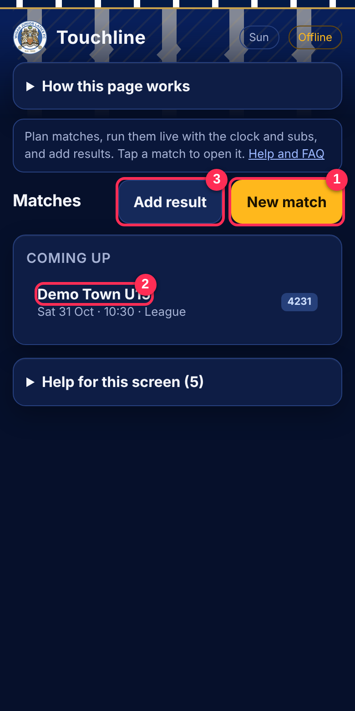
1. Create the match
- 1Tap New match.
- Fill in the opponent, date, kick off time, home or away, the league or cup, and half length (35 minutes at this age).
- 2Your match now sits under Coming up. Tap it to open it any time.
- 3Add result is for games already played.
Postponed? Open the match, use the Postponed box, add a note for parents.
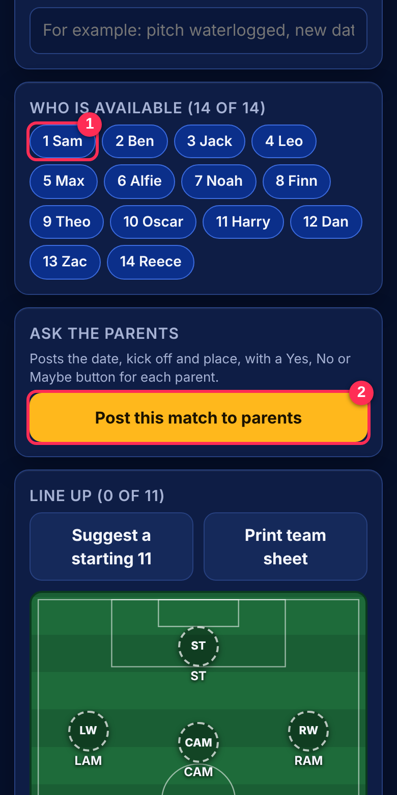
2. Ask who is available
- 1Open the match and scroll to Who is available. Tap a lad to cycle yes, no, unsure. Use it for what you already know (injured, away).
- 2Tap Post this match to parents. Parents and players now see the game on their Home page and answer Yes, No or Maybe.
- Later, tap Pull in answers to bring their replies into your list. Check the numbers before you pick.
- Take it down removes the post if details change.
Selection comes from the availability poll and the training review, not a hunch on a Thursday night.
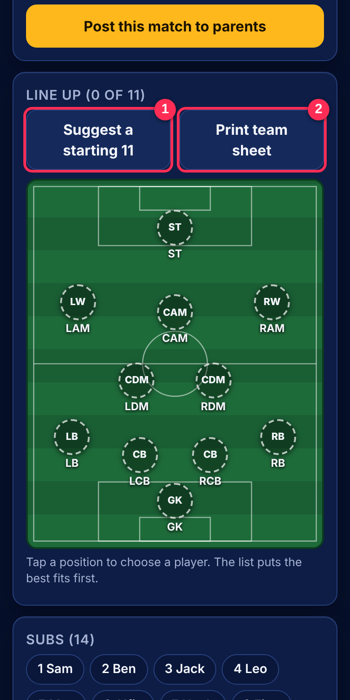
3. Pick the side
- 1Tap Suggest a starting 11. It uses who is in, positions and minutes so far. You can change anything.
- Tap a position on the pitch, then tap the lad you want. The list shows who fits best.
- Check the Subs list and the minutes bars. Every lad should start and finish games across the block.
- 2Print team sheet gives a copy for the referee.
- 3Start match goes live. Only press it at kick off.
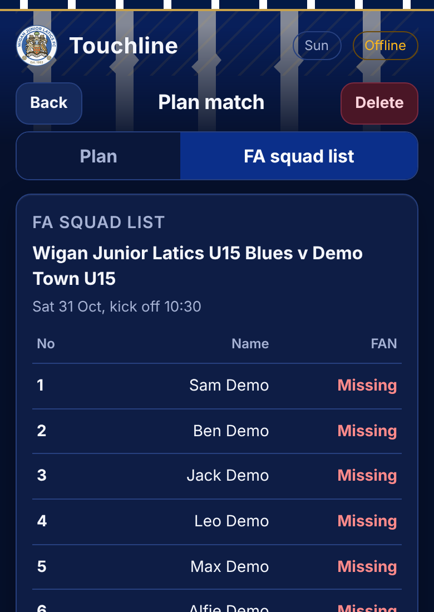
4. FA squad list
- In the match, tap the FA squad list button beside Plan.
- Check every lad shows a FAN number. Missing ones show in red: add them on the lad's card in Team, Squad.
- Tap Print or PDF to give to the referee and the other manager. Coaches only, never on the parents page.
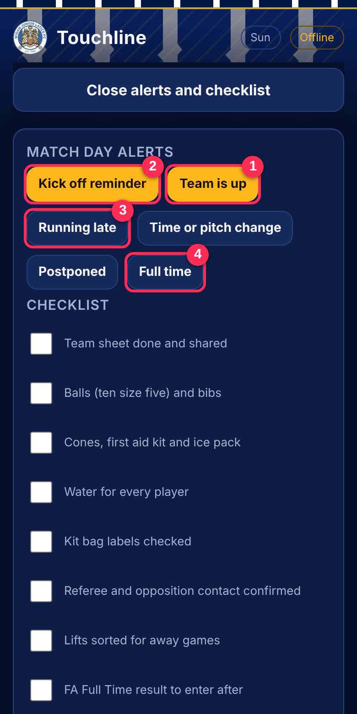
5. Alerts and checklist
Open Alerts and checklist at the top of the match.
- 1Team is up tells parents the side is on the page.
- 2Kick off reminder for the morning.
- 3Running late, Time or pitch change and Postponed are for problems.
- 4Full time sends the result alert.
- Tick the match day checklist as you do each job: team sheet, balls and bibs, first aid kit, water, kit bag labels, ref and opposition contact, lifts, FA Full Time result.
An alert goes to every parent phone that has turned alerts on. Think before you press.
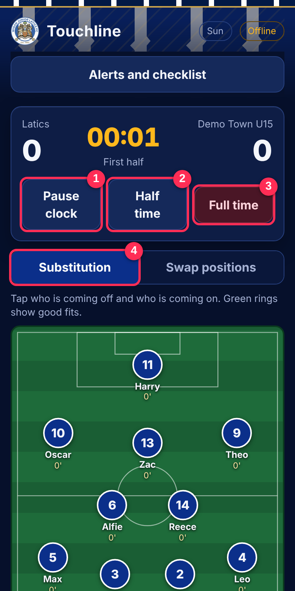
6. Run the live match
- 1Pause clock and resume it for injuries.
- 2Half time, then Start second half.
- 3Full time ends the game.
- 4Substitution: tap who comes off on the pitch, then who comes on from the bench. The playing time bars update. Swap positions moves two lads on the pitch.
The sub reminder fires every 17 minutes by default so nobody sits too long.
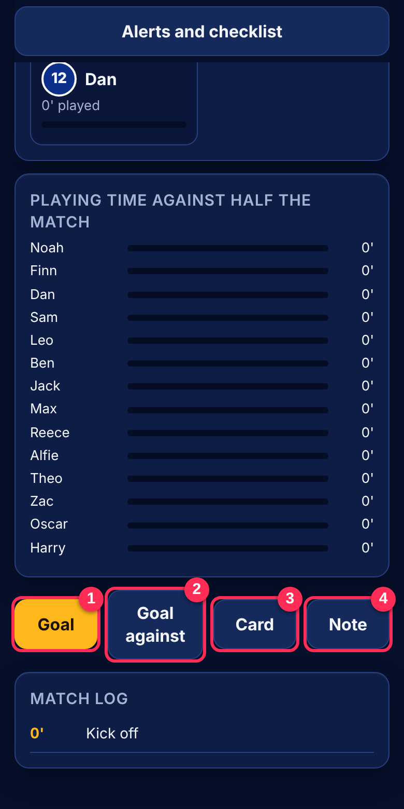
7. Log what happens
- 1Goal: pick the scorer and assist.
- 2Goal against.
- 3Card.
- 4Note: type a quick note about a lad or the game.
- Undo last takes back a wrong tap. The Match log below keeps the timeline.
After the whistle
- Tap Full time. The match moves to its summary.
- Man of the match is shown to parents and players, so pick it fairly.
- Copy for WhatsApp gives a ready written summary.
- Enter the result on FA Full Time, then run a Reflect (Part 2, step 9).
If the signal drops. The app saves on the phone first and syncs later. Keep logging. The Offline badge at the top turns off when it catches up.
Part 2. Training
Wednesday 19:00 to 20:00 on one third of a 4G pitch. Fifty five minutes of football, five for set up and the review.
Before you start: what must be in place
- A block is built in Train, Plan, Build (six weeks, week six bridges to the next block).
- The run card is made for the week (step 4).
- The week is shared to parents and players (step 5).
- Deano has seen his named practice before Wednesday.
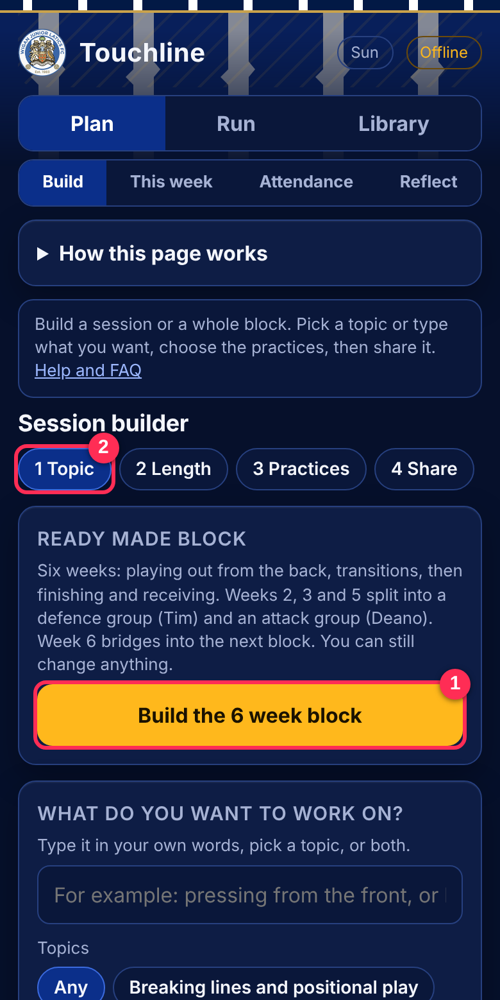
1. Plan the block
- Train, then Plan, then Build.
- 1Build the 6 week block is the ready made block. It has the theme, the practices, and weeks 2, 3 and 5 as splits.
- 2Or work through the tabs: 1 Topic, 2 Length, 3 Practices, 4 Share.
- Pick a topic or type your own words. The last week bridges into the next block topic.
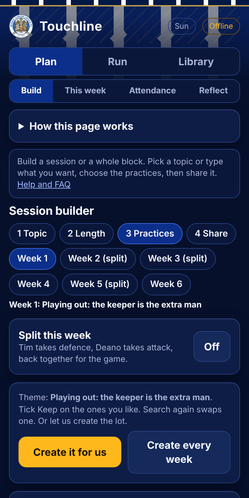
2. Fill each week
- On 3 Practices, tap a week (Week 1 to Week 6). Weeks marked split have Tim on defence and Deano on attack.
- Create it for us fills the week. Create every week fills all six.
- On each practice tap Keep if you like it, Search again to swap it, or Find my own to pick from Resources.
- Check who leads. Deano always has one named practice.
- Tap Next: review and share.
The groups for the night are mixed on purpose. Tap Mix them again for a new set. No ability bands.
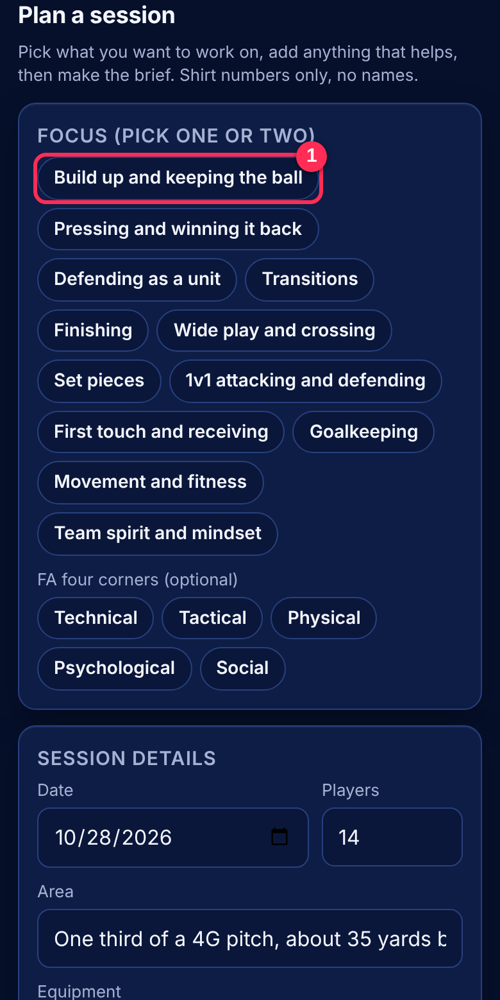
3. One off plan (Train, Plan, This week)
- 1Pick a focus (one or two) and, if you like, an FA four corners tag.
- Check date, number of players, area and kit. Add anything to help the plan.
- Tap Make the brief. Use Copy or Open in Claude to send it for a full session plan.
Use this when you want a session outside the block.
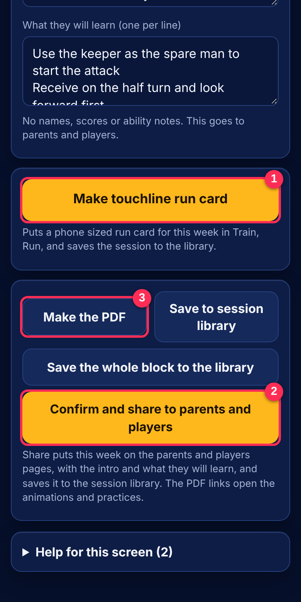
4. Make the run card and share
- 1Make touchline run card builds the phone sized plan you coach from on the grass.
- 3Make the PDF prints the plan with a QR code to the animation.
- 2Confirm and share to parents and players puts the week on their Home pages with the intro and what they will learn.
- After sharing, two more buttons appear: Send a push alert to parents and Send a push alert to the players.
Check the intro line and the learning points first. No names, scores or ability notes.
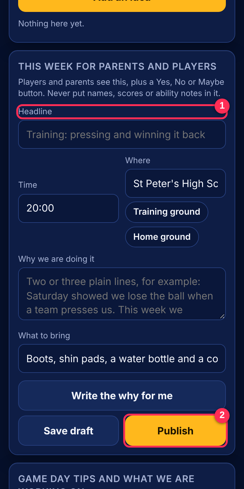
5. Post to parents and players, and ask who is coming
- Train, Plan, This week, scroll to This week for parents and players.
- 1Write the Headline, time, where (training ground or home ground), why we are doing it, and what to bring. Write the why for me drafts it.
- 2Publish (or Update and publish). Players and parents see it and answer Yes, No or Maybe.
- Further down, Who is coming shows the answers. Tap Refresh answers, then Use Yes count to set the player number for the plan.
- Take it down removes it. Print or PDF gives a copy.
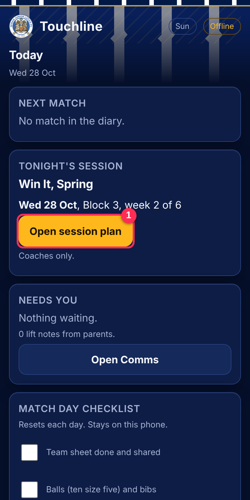
6. Wednesday: start on Today
- Open Today at 18:30.
- 1Open session plan shows tonight's session. Coaches only.
- Tick the match day checklist items that apply, and check Needs you for anything parents or players have asked.
- Check the welfare and knocks list. A lad with growth pain loses jumping and repeated sprints that week.
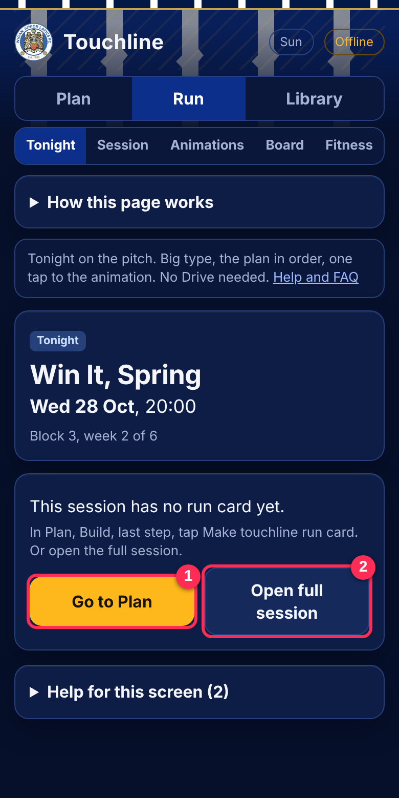
7. Run the night: Tonight
- Train, Run, Tonight.
- The card shows the title, the date and the block week. If you see This session has no run card yet, tap Go to Plan and make it (step 4).
- 2Open full session gives every practice in order with who leads, the three coaching points and two questions for each.
- Deano's practice shows Deano says: the words to use, in plain English.
- Tap Play on a practice to watch its animation.
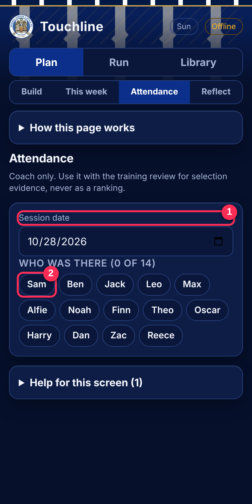
8. Attendance
- Train, Plan, Attendance.
- 1Check the session date.
- 2Tap each lad as he walks on. A highlighted name means he is here. Tap again to undo.
- It takes under a minute. Do it while the arrival activity runs.
- It is evidence for selection and load. It is never a ranking.
9. Reflect (Train, Plan, Reflect)
- Do it the same night while it is fresh.
- Answer the few questions, tick the four corners you saw, add welfare notes, and note who stood out.
- Write one sentence on what we try on Saturday. This feeds next week's selection.
Part 3. Board, animations and 3D
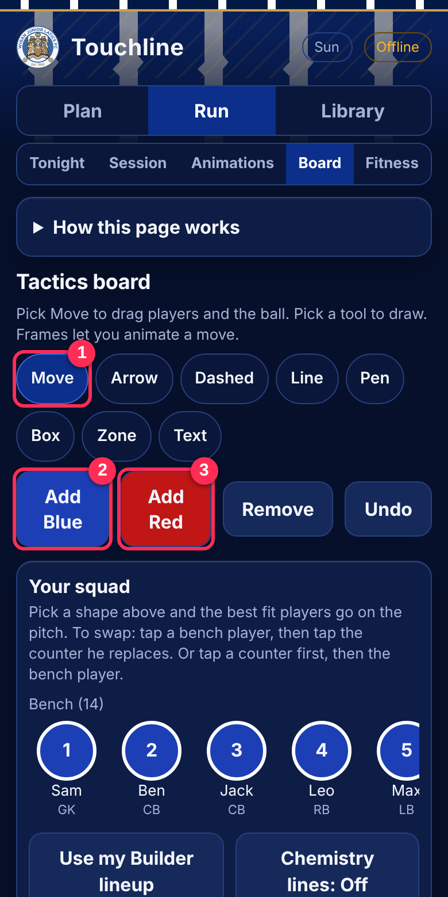
1. Use the tactics board
- Train, Run, Board.
- 1Pick a tool: Move (drag players and the ball), Arrow, Dashed, Line, Pen, Box, Zone, Text.
- 2Add Blue and 3Add Red place a player. Use Remove and Undo to tidy.
- Pick a colour. Choose a team shape from the dropdowns to drop a full set in place.
- Your squad lets you drop real lads in by number. Use my Builder lineup brings in Saturday's side.
- Pick a pitch size or load your own image under Pitch.
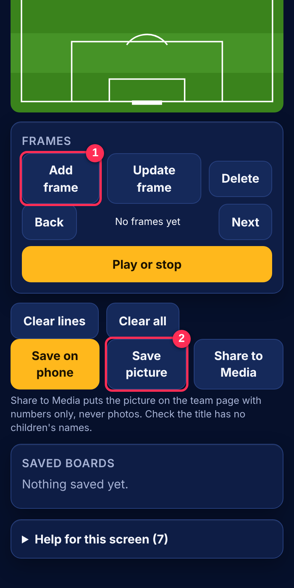
2. Frames, save and share
- 1Add frame saves the current picture as step one. Move the players, then Add frame again for step two. Use Update frame to correct one.
- Play or stop runs the frames as a simple animation. Back and Next step through.
- 2Save picture saves a PNG to your phone. Save on phone keeps the board in Saved boards.
- Share to Media puts it on the team page after you approve it. No children's names.
- Clear lines keeps the players. Clear all wipes the board.
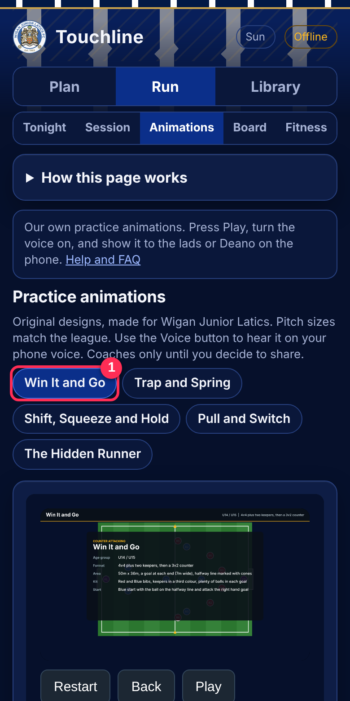
3. Watch the practice animations
- Train, Run, Animations.
- 1Pick a practice (Win It and Go, Trap and Spring, and so on).
- 2Tap Play. Restart and Back are under the picture. Turn the voice on to hear it. Slow it down to show a coaching point.
- Read the Set up, Rules and coaching points under the picture.
- Use it to show Deano or the lads what a practice looks like before you start.
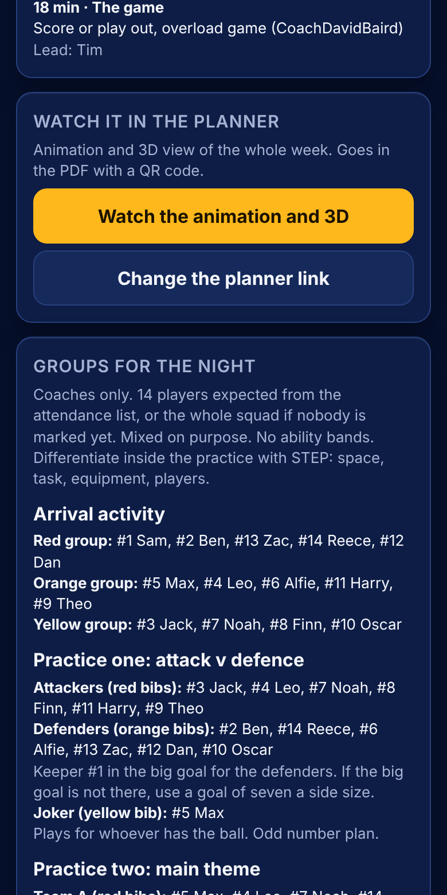
4. Animation and 3D for the whole week
- Train, Plan, Build, Next: review and share.
- The Watch it in the planner card holds the link to the week's animation and 3D view in Sport Session Planner.
- If a link exists tap Watch the animation and 3D. It opens in your browser. The same link goes in the PDF as a QR code.
- If not, tap Add the planner link and paste the link for the week.
- To request one: draw the week in Sport Session Planner (or ask Claude in the Latics project to build it from the session plan), then paste the link here. Link each practice too using Planner link on the practice card.
Only paste links you trust. Weeks 3 to 6 may not have links yet, so expect the note "No planner link for this week yet".
Part 4. Posting to parents and players
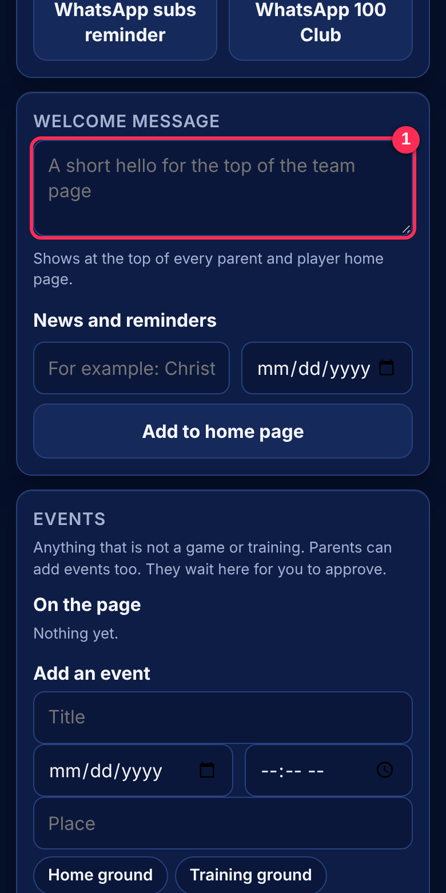
The Hub
- Comms, Hub. It controls what parents and players see on Home.
- 1Welcome message is the short hello at the top of the team page. Add events and news and reminders below it.
- Approve events and pictures that parents post. Nothing shows until you approve it.
- Check lifts and contacts. Send phone alerts only when you need to.
- Add subs reminder to news and Add 100 Club to news put the reminders on Home. The WhatsApp buttons make the text to paste.
| I want to tell… | Where | Button |
|---|
| Everyone about training | Train, Plan, This week | Publish |
| Everyone about the block week | Train, Plan, Build, review and share | Confirm and share to parents and players |
| Everyone about a match | Match, open the match | Post this match to parents |
| Everyone the side is up | Match, Alerts and checklist | Team is up |
| Everyone something general | Comms, Hub | Welcome message, news |
| Only players about training | Train, Plan, Build, after sharing | Send a push alert to the players |
Part 5. Quick fixes
| Problem | Try this |
|---|
| Offline badge stays on | You are out of signal. Keep working. It syncs when you are back. |
| Old version of the app | Close it fully and reopen. If still old, clear the site data in your browser settings. |
| No run card for tonight | Train, Plan, Build, review and share, tap Make touchline run card. |
| Lad missing from lists | Team, Squad: check he is marked active and has a shirt number. |
| FAN number missing | Team, Squad, tap the lad, add it, then reprint the FA squad list. |
| Parent cannot get in | Comms, More: check the parent and player codes. Never share the coach code. |
| Alert sent by mistake | Send a short follow up alert straight away. Tell Tim. |
Keep it safe. The coach code is for Tim and Deano only. Sign out of shared phones in Comms, More. If a phone is lost, tell Tim at once so codes can be changed. If a button in the app does not match this guide, tell Tim and the guide will be updated.